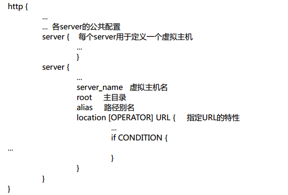
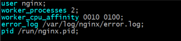
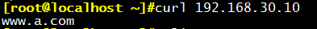
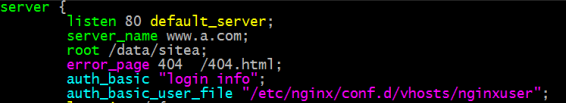

Nginx 是一个高性能的Web和反向代理服务器, 它具有有很多非常优越的特性:作为 Web 服务器：相比Apache，Nginx 使用更少的资源，支持更多的并发连接，体现更高的效率，这点使 Nginx尤其受到虚拟主机提供商的欢迎。
一、Nginx介绍
Nginx：engine X ，2002年，开源，商业版
Nginx是免费，开源，高性能的HTTP和反向代理服务器，邮件代理服务器，通
用TCP/UDP代理服务器
解决C10K问题（10K Connections）
二次开发版：
Tengine, OpenResty（章亦春）
特性：
模块化设计，较好的扩展性
高可靠性
支持热部署：不停机更新配置文件，升级版本，更换日志文件
低内存消耗：10000个keep-alive连接模式下的非活动连接，仅需2.5M内存
event-driven,aio,mmap，sendfile
基本功能：
静态资源的web服务器
http协议反向代理服务器
pop3/imap4协议反向代理服务器
FastCGI(LNMP),uWSGI(python)等协议
模块化（非DSO），如zip，SSL模块
web服务相关的功能：
虚拟主机（server）
支持 keep-alive 和管道连接
访问日志（支持基于日志缓冲提高其性能）
url rewirte
路径别名
基于IP及用户的访问控制
支持速率限制及并发数限制
重新配置和在线升级而无须中断客户的工作进程
Memcached的GET 接口
为什么选择Nginx？
Nginx 是一个高性能的Web和反向代理服务器, 它具有有很多非常优越的特性:作为 Web 服务器：相比
Apache，Nginx 使用更少的资源，支持更多的并发连接，体现更高的效率，这点使 Nginx尤其受到虚拟主
机提供商的欢迎。能够支持50000个并发连接数的响应，Nginx选择了epoll作为开发模型.
作为负载均衡服务器：Nginx 既可以在内部直接支持Rails 和 PHP，也可以支持作为 HTTP代理服务器 对
外进行服务。Nginx 用 C 编写, 不论是系统资源开销还是 CPU 使用效率都比Perlbal 要好的多。
作为邮件代理服务器: Nginx 同时也是一个非常优秀的邮件代理服务器（最早开发这个产品的目的之一也是
作为邮件代理服务器），Last.fm 描述了成功并且美妙的使用经验。
Nginx 安装非常的简单，配置文件 非常简洁（还能够支持perl语法），Bugs非常少的服务器:Nginx 启动特
别容易，并且几乎可以做到7*24不间断运行，即使运行数个月也不需要重新启动。你还能够在 不间断服务
的情况下进行软件版本的升级。
Nginx程序架构

Nginx程序架构：
master/worker结构
一个master进程：
负载加载和分析配置文件、管理worker进程、平滑升级
一个或多个worker进程
处理并响应用户请求
缓存相关的进程：
cache loader：载入缓存对象
cache manager：管理缓存对象
高度模块化
nginx高度模块化，但其模块早期不支持DSO机制；1.9.11版本支持动态装载和
卸载
模块分类：
核心模块：core module
标准模块：
HTTP 模块： ngx_http_*
HTTP Core modules 默认功能
HTTP Optional modules 需编译时指定
Mail 模块 ngx_mail_*
Stream 模块 ngx_stream_*
第三方模块
二、Nginx服务配置
配置文件的组成部分：
主配置文件：nginx.conf
子配置文件：include conf.d/*.conf
fastcgi， uwsgi，scgi等协议相关的配置文件
mime.types：支持的mime类型
主配置文件的配置指令：
directive value [value2 …];
注意：
(1) 指令必须以分号结尾
(2) 支持使用配置变量
内建变量：由Nginx模块引入，可直接引用
自定义变量：由用户使用set命令定义
set variable_name value;
引用变量：$variable_name
主配置文件结构：
主配置文件结构：四部分组成
main block：主配置段，即全局配置段，对http,mail都有效
event {
…
} #事件驱动相关的配置
http {
…
} #http/https协议相关配置段
mail {
…
} #mail协议相关配置段
stream {
…
} # stream服务器相关配置段
http协议相关的配置结构

三、Web服务常见功能及配置
(一)性能优化相关的配置：
1、worker_processes number | auto
worker进程的数量；通常应该为当前主机的cpu的物理核心数
2、worker_cpu_affinity cpumask …
worker_cpu_affinity auto [cpumask] 提高缓存命中率
CPU MASK： 00000001：0号CPU
00000010：1号CPU
10000000：8号CPU
worker_cpu_affinity 0001 0010 0100 1000;
worker_cpu_affinity 0101 1010;
3、worker_priority number
指定worker进程的nice值，设定worker进程优先级：[-20,20]
4、worker_rlimit_nofile number
worker进程所能够打开的文件数量上限,如65535
示例：修改worker**进程数量**

示例：设置NICE**优先级**
变为前台执行
daemon on|off
是否以守护进程方式运行nignx，默认是守护进程方式，用于测试环境

以守护方式（前台执行）运行
EVENT**语句块**
每个worker**支持的最大连接1024**，生成环境应适当调大
work_connections *Cpu个数= worker_rlimit_nofile number
(二)虚拟主机配置
定义一个专门存放虚拟主机的目录：
配置一个虚拟主机
server {
listen address[:PORT]|PORT;
server_name SERVER_NAME;
root /PATH/TO/DOCUMENT_ROOT;
}
vim a.com.conf
vim b.com.conf
server {
listen 8080
server_name www.b.com
}
(三)改变默认指向：default_server
vim c.com.conf
要注意将主配置文件中的defaults_server删掉，否则nginx服务将无法正常启动

(四)支持通配符写法
匹配优先级机制从高到低：
(1) 首先是字符串精确匹配 如：www.magedu.com
(2) 左侧***通配符 如：*.magedu.com**
(3) 右侧***通配符 如：www.magedu.\***
(4) 正则表达式 如： ~^.*.magedu.com$
(5) default_server
(五)隐藏Nginx版本
server_tokens on | off | build | string
是否在响应报文的Server首部显示nginx版本
vim /etc/nginx/conf/nginx.conf
再次访问
(五)软连接指向
(六)针对特定文件指定存放位置
location [ = | ~ | ~* | ^~ ] uri { … }
location @name { … }
在一个server**中location配置段可存在多个，用于实现从uri到文件系统的路**
径映射；ngnix**会根据用户请求的URI来检查定义的所有location，并找出一个最**
佳匹配，而后应用其配置
示例：
server {…
server_name www.magedu.com;
location /images/ {
root /data/imgs/;
}
}
http://www.magedu.com/images/logo.jpg
–> /data/imgs/images/logo.jpg
示例：
(七)定制错误页面
echo ‘NO FOUND PAGE
’ > /data/sitea/error/404.html
客户端访问测试：
(八)避免流氓浏览器404**劫持**
error_page code … [=[response]] uri;
模块：ngx_http_core_module
定义错误页，以指定的响应状态码进行响应
可用位置：http, server, location, if in
location
error_page 404 /404.html
error_page 404 =200 /404.html
修改配置文件
再次访问：
修改404**页面到指定默认页面**
keepalive_timeout timeout [header_timeout];
设定保持连接超时时长，0**表示禁止长连接，默认为75s**
keepalive_requests number;
在一次长连接上所允许请求的资源的最大数量
默认为100
(九)除了管理员域其他主机无法使用GET**以外的其他方法**
(十)实现基于ip**的访问控制功能**
ngx_http_access_module**模块**
1、allow address | CIDR | unix: | all;
2、deny address | CIDR | unix: | all;
http, server, location, limit_except
自上而下检查，一旦匹配，将生效，条件严格的置前
示例：
location / {
deny 192.168.1.1;
allow 192.168.1.0/24;
allow 10.1.1.0/16;
allow 2001:0db8::/32;
deny all;
}
(十一)实现基于用户的访问控制：
ngx_http_auth_basic_module**模块**
实现基于用户的访问控制，使用basic**机制进行用户认证**
1**、auth_basic string | off;**
2**、auth_basic_user_file file;**
location /admin/ {
auth_basic “Admin Area”;
auth_basic_user_file /etc/nginx/.ngxpasswd;
}
用户口令文件：
1**、明文文本：格式name:password:comment**
2**、加密文本：由htpasswd**命令实现
httpd-tools**所提供**
示例：
cd /etc/nginx/conf.d/vhost
htpasswd -cm nginxuser httpuser1
htpasswd -m nginxuser httpuser2
修改配置
针对整个网站生效

针对特定目录生效
(十二)Nginx**状态页**
ngx_http_stub_status_module**模块**
功能：用于输出nginx的基本状态信息
输出信息示例：
Active connections: 291
server accepts handled requests
16630948 16630948 31070465
上面三个数字分别对应accepts,handled,requests三个值
Reading: 6 Writing: 179 Waiting: 106
示例：
浏览器访问http://192.168.30.10/status
相关参数说明：
Active connections:当前状态，活动状态的连接数
accepts：统计总值，已经接受的客户端请求的总数
handled：统计总值，已经处理完成的客户端请求的总数
requests：统计总值，客户端发来的总的请求数
Reading：当前状态，正在读取客户端请求报文首部的连接的连接数
Writing：当前状态，正在向客户端发送响应报文过程中的连接数
Waiting：当前状态，正在等待客户端发出请求的空闲连接数
(十三)日志相关设置
ngx_http_log_module**模块**
指定日志格式记录请求
1、log_format name string …;
string可以使用nginx核心模块及其它模块内嵌的变量
2、access_log path [format [buffer=size] [gzip[=level]] [flush=time]
[if=condition]];
access_log off;
访问日志文件路径，格式及相关的缓冲的配置
buffer=size
flush=time
3、open_log_file_cache max=N [inactive=time] [min_uses=N] [valid=time];
open_log_file_cache off;
缓存各日志文件相关的元数据信息
max：缓存的最大文件描述符数量
min_uses：在inactive指定的时长内访问大于等于此值方可被当作活动项
inactive：非活动时长
valid：验证缓存中各缓存项是否为活动项的时间间隔
示例：自定义日志
系统默认：
自定义一个日志：
添加到access_log(可添加到任何语句块中)
测试日志
(十四)实现**Nginx的SSL加密https**
ngx_http_ssl_module**模块：**
1、ssl on | off;
为指定虚拟机启用HTTPS protocol， 建议用listen指令代替
2、ssl_certificate file;
当前虚拟主机使用PEM格式的证书文件
3、ssl_certificate_key file;
当前虚拟主机上与其证书匹配的私钥文件
4、ssl_protocols [SSLv2] [SSLv3] [TLSv1] [TLSv1.1] [TLSv1.2];支持ssl协议版本，默
认为后三个
5、ssl_session_cache off | none | [builtin[:size]] [shared:name:size];
none: 通知客户端支持ssl session cache，但实际不支持
builtin[:size]：使用OpenSSL内建缓存，为每worker进程私有
[shared:name:size]：在各worker之间使用一个共享的缓存
6、ssl_session_timeout time;
客户端连接可以复用ssl session cache中缓存的ssl参数的有效时长，默认5m
示例：
server {
listen 443 ssl;
server_name www.magedu.com;
root /vhosts/ssl/htdocs;
ssl on;
ssl_certificate /etc/nginx/ssl/nginx.crt;
ssl_certificate_key /etc/nginx/ssl/nginx.key;
ssl_session_cache shared:sslcache:20m;
ssl_session_timeout 10m;
}
检查语法：
nginx -t
验证https
(十五)实现**NGINX搭建多个HTTPS**网站
修改配置文件
验证https：
(十六)rewite**重写**
ngx_http_rewrite_module**模块：**
The ngx_http_rewrite_module module is used to change request URI
using PCRE regular expressions, return redirects, and conditionally select
configurations.
将用户请求的URI基于PCRE regex所描述的模式进行检查，而后完成重定向替换
1**、**rewrite regex replacement [flag]
将用户请求的URI基于regex所描述的模式进行检查，匹配到时将其替换为
replacement指定的新的URI
注意：如果在同一级配置块中存在多个rewrite规则，那么会自下而下逐个
检查；被某条件规则替换完成后，会重新一轮的替换检查
隐含有循环机制,但不超过10次；如果超过，提示500响应码，[flag]所表示
的标志位用于控制此循环机制
如果replacement是以http://或https://开头，则替换结果会直接以重向返
回给客户端, 即永久重定向301
[flag]**：**
last：重写完成后停止对当前URI在当前location中后续的其它重写操作，
而后对新的URI启动新一轮重写检查；提前重启新一轮循环，不建议在location中
使用
break：重写完成后停止对当前URI在当前location中后续的其它重写操作，
而后直接跳转至重写规则配置块之后的其它配置；结束循环，建议在location中使
用
redirect：临时重定向，重写完成后以临时重定向方式直接返回重写后生成
的新URI给客户端，由客户端重新发起请求；使用相对路径,或者http://或https://
开头，状态码：302
permanent: 重写完成后以永久重定向方式直接返回重写后生成的新URI给
客户端，由客户端重新发起请求，状态码：301
2**、**return
return code [text];
return code URL;
return URL;
停止处理，并返回给客户端指定的响应码
3**、**rewrite_log on | off;
是否开启重写日志, 发送至error_log（notice level）
4**、**set $variable value;
用户自定义变量
注意：变量定义和调用都要以$开头
5**、**if (condition) { … }
条件满足时，执行配置块中的配置指令；server, location
condition：
比较操作符：
= 相同 != 不同
~：模式匹配，区分字符大小写
~*：模式匹配，不区分字符大小写
!~：模式不匹配，区分字符大小写
!~*：模式不匹配，不区分字符大小写
文件及目录存在性判断：
-e, !-e 存在（包括文件，目录，软链接）
-f, !-f 文件 -d, !-d 目录 -x, !-x 执行
示例：
www.a.com/images/a.jpg –> www.a.com/media/images/a.jpg
相关配置：
rewrite ^(images/.*)$ /media/$1
示例：
www.a.com/bbs –> www.a.com/forum
redirect**模式：**302
permanent**模式**
(十七)实现**http自动跳转https**
(十八)实现将**http与https**写入同一个虚拟机

break**模式：可避免死循环**
(十九)实现自定义响应码
(二十)Nginx**防盗链**
ngx_http_referer_module**模块：**
功能：用来阻止Referer首部无有效值的请求访问，可防止盗链
格式：valid_referers none|blocked|server_names|string …;
定义referer首部的合法可用值，不能匹配的将是非法值
none：请求报文首部没有referer首部
blocked：请求报文有referer首部，但无有效值
server_names：参数，其可以有值作为主机名或主机名模式
arbitrary_string：任意字符串，但可使用*作通配符
regular expression：被指定的正则表达式模式匹配到的字符串,要使用~开头
开启防盗链功能后，盗链图片将无法正常显示